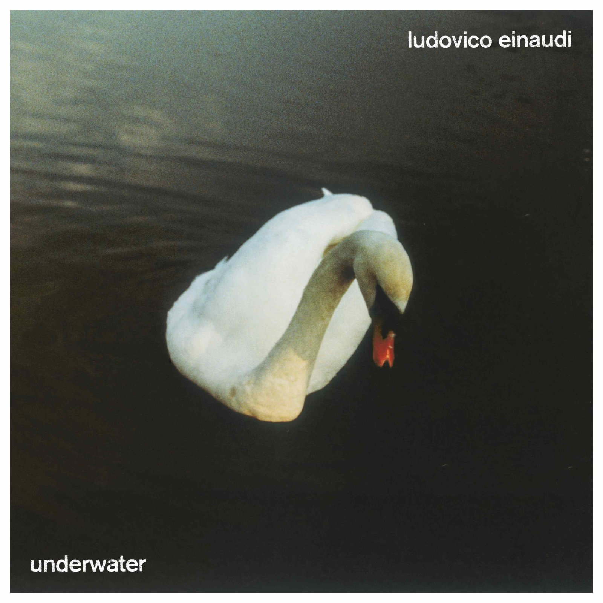
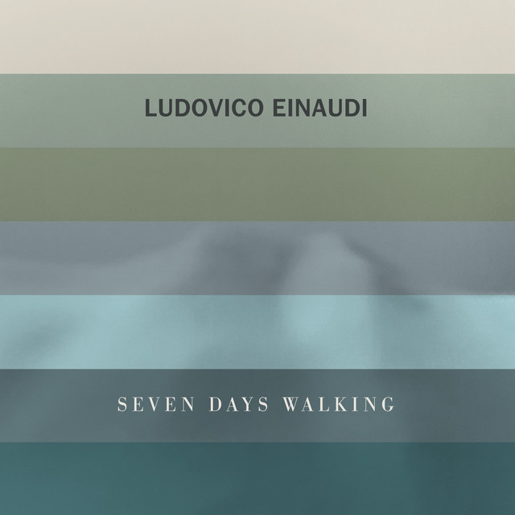
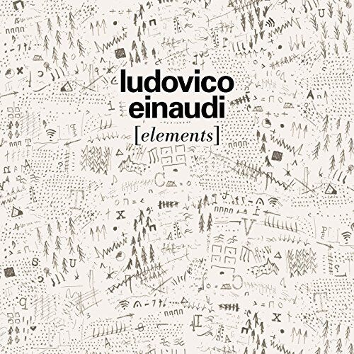
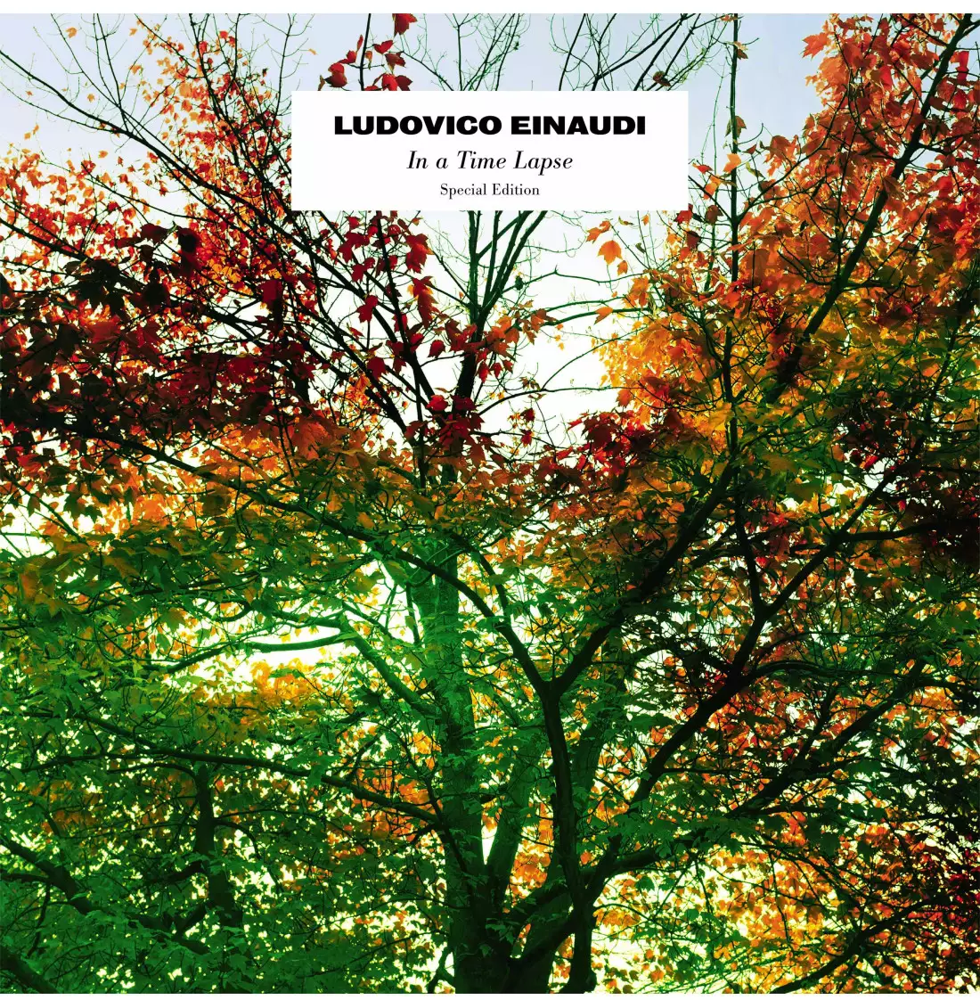
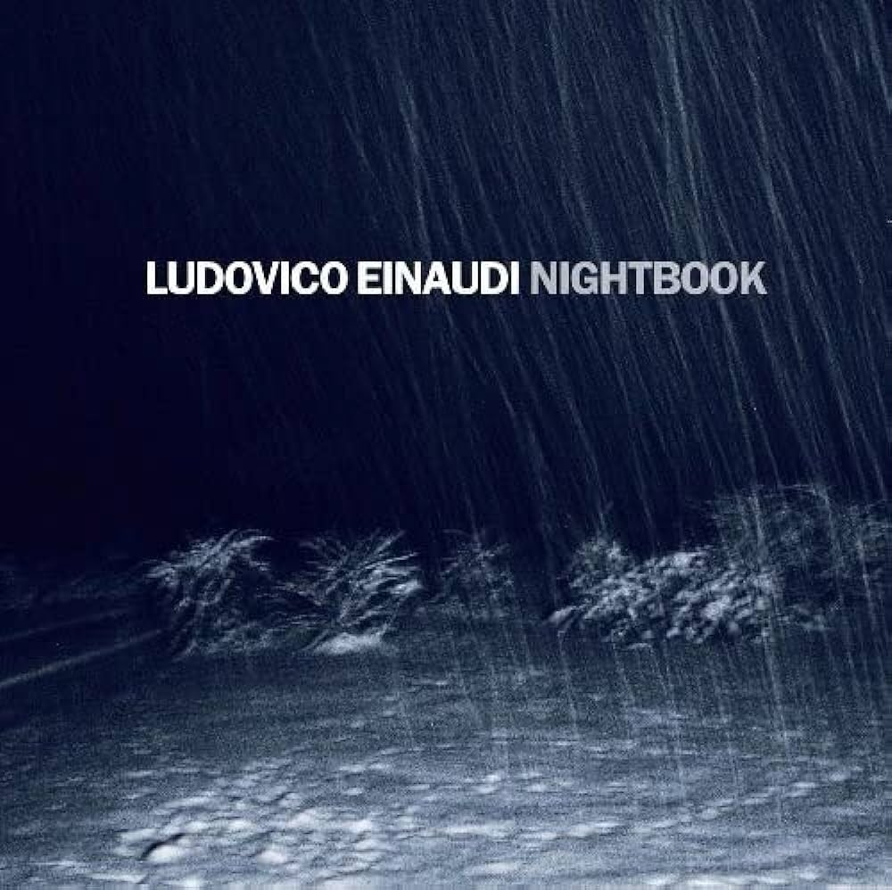
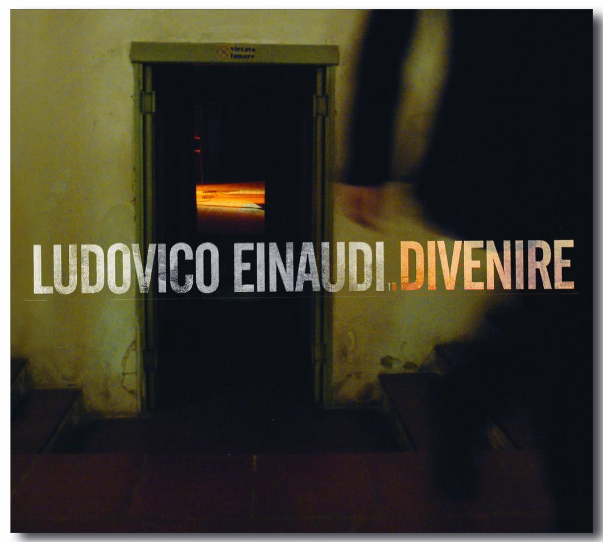
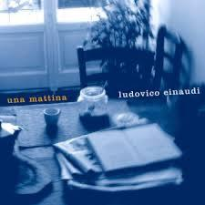
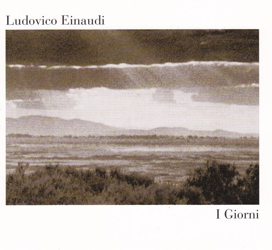
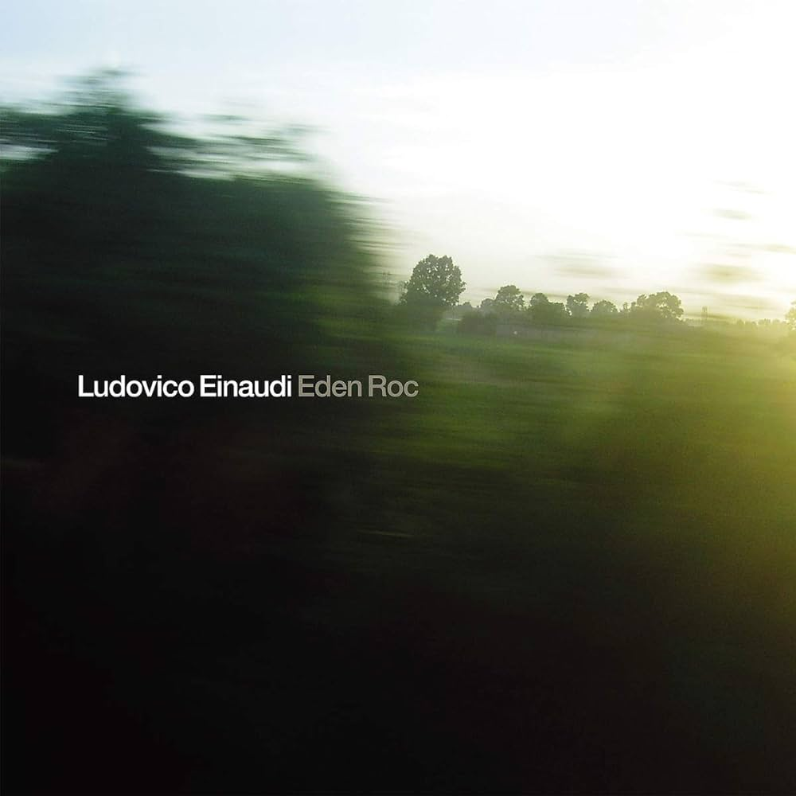
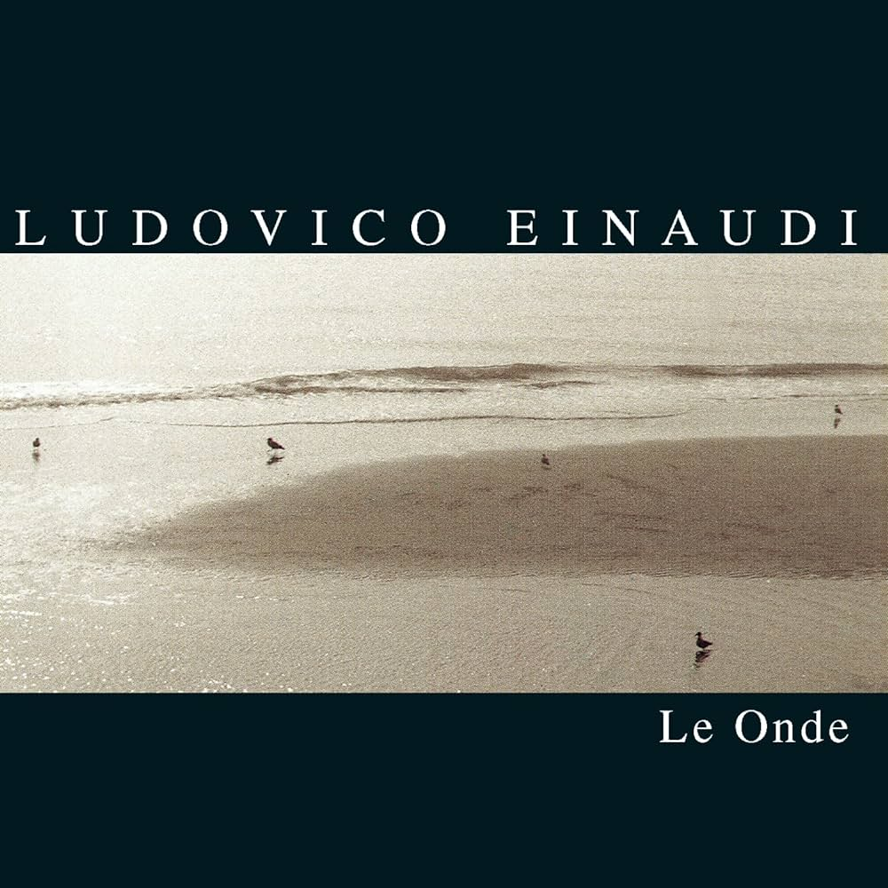

Ludovico Einaudi è un compositore e pianista italiano di fama mondiale, noto per le sue eleganti ed emotive composizioni musicali.
Egli è nato il 23 novembre 1955 a Torino, in Italia, e proviene da una famiglia con una solida tradizione musicale, infatti, ha studiato musica fin dalla giovane età, approfondendo il suo talento studiando pianoforte al Conservatorio di Milano.
Grazie alla sua ampia cultura musicale, che spazia dal jazz al rock fino ad arrivare alla musica classica, fece carriera già dagli anni '90, non solo in Italia ma anche a livello internazionale.
La sua influenza nella scena musicale moderna è evidente non solo attraverso la sua vasta discografia, ma anche attraverso la collaborazione con diversi musicisti e artisti.
" Credo che un artista debba proporre una lettura della realtà attraverso un linguaggio personale.
Dopodiché non sta a me spiegare che cosa dice o trasmette la mia musica, il bello del mio lavoro è che posso offrire degli stimoli immateriali, stimoli che l’ascoltatore è libero di cogliere in un modo piuttosto che in un altro.
È meravigliosa la capacità del suono di comunicare in modo trasversale, complesso, leggero, invisibile, per poi essere recepito nelle maniere più diverse. "
|

|

|

|
Underwater |
Seven Days Walking |
Element |
2022" Underwater " è nato quando il mondo era fermo e silenzioso, consentendo all'artista di immergersi in uno spazio libero, senza confini, dando una dimensione fluida e parallela, che scorre senza interferenze esterne. Esso è composto da forme brevi, quasi canzoni, scritte di getto sul pianoforte, definite dall'artista come un’onda che va e che viene |
2019" Seven Days Walking " è un progetto ambizioso, composto da sette album, in cui si cerca di entrare nei meandri del processo creativo, per capire come un’idea musicale può svilupparsi in più direzioni, cambiando nuovamente nel momento in cui viene ascoltata. Questo album è caratterizzato da una musica delicata, minimalista e riflessiva, che ad ogni album esplora una serie di variazioni tematiche basate su una melodia principale creando un'esperienza musicale profonda e coinvolgente. |
2015" Element " prende ispirazione da elementi della natura, con ogni traccia che evolve da un piccolo gesto o motivo, evocando un viaggio attraverso pensieri e sentimenti frammentati. Einaudi afferma che con questo album ha visto nuove frontiere, al confine tra ciò che sapeva e ciò che non sapeva. |
|

|

|

|
In a Time Laps |
Nightbook |
Divenire |
2013" In a Time laps " è stato al 2º posto nella classifica dei più venduti nei Paesi Bassi e al 5º posto nella Classifica FIMI Album in Italiarappresenta. Questo album rappresenta l'autore quando diventa cosciente del fatto che il tempo ha un limite, e proprio quando si conosce il proprio limite nasce un esigenza interiore per cercare di riempire quello spazio vuoto con tutta la tua energia e ricominci a vivere ogni istante della tua vita in modo pieno come quando eri bambino, infatti questo album rappresenta la naturale evoluzione. Questi brani esplorano tessiture sonore e arrangiamenti che fondono mondi musicali diversi in un linguaggio stratificato, coerente e preciso. In questo album si segnala la presenza del grande violinista Daniel Hope, ospite in quattro brani. |
2009" Nightbook" è un percorso nel quale ogni brano è il capitolo di una storia, la sfaccettatura di un prisma, uno sguardo possibile sulle esperienze che appartengono al lato più onirico, più interno di noi stessi, che esplorano le emozioni notturne e l'introspezione. Esso apre una finestra sull’interno, e sulla possibilità di entrare in contatto con quegli aspetti profondi della realtà che rimandano a una dimensione mitica, potremmo dire originaria. |
2006" Divenire " è un disco morbido e sinuoso, lontano, che si prefigge come chiave dell'anima che può aprire qualsiasi serratura, se inserita nel modo giusto. Questo album rappresenta la pura essenza delle cose, dalle foglie mosse dal vento alle onde che si infrangono contro gli scogli. Può essere tutto come niente, può rappresentare ogni sfaccettatura del cuore umano, dalle passioni ai rancori, dalle speranze ai desideri. Meravigliosa la tranquillità che ci fa lasciare alle spalle ogni turbamento e che, anche se solo per pochi istanti, ci fa dimenticare l'angoscia e la frenesia del mondo che ci circonda. |
|

|

|

|
Una Mattina |
I Giorni |
Eden Roc |
2004" Una mattina " è un album che ha concesso alcuni brani come colonne sonore di grandi film come "Quasi amici". Questo album è dedicato a poeti, sognatori, innamorati, disperati e incazzati, perchè questo album esprime pura verità per qualunque esigenza morale, grazie alla miscela di strumenti d'archi e altri suoni ambientali con il pianoforte. |
2001" I Giorni " nasce da un viaggio a Mali, un giro in auto a Bamako con l’amico musicista Toumani Diabate e una melodia popolare trasmessa alla radio. Ludovico sente quella melodia, ne prende lo spirito, una voce muta, legata alla terra, che si può sentire levarsi dal suolo africano solo una volta che si è sul luogo. Un lamento, un afflato, che è comune a molte sue composizioni da cui si sprigiona un respiro lento, soppesato e intimo. E così quella melodia diventa il tema portante che percorre il disco nota per la sua semplicità ed eleganzaca, accompagnata da strumenti come il violino e il violoncello. |
1999" Eden Roc " prende ispirazione dalla località dove visse lo scrittore Francis Scott Fitzgerald, che Einaudi considera come il luogo ideale per trovare l’equilibrio interiore, catturando spesso un senso di tranquillità e contemplazione. |
|

|
||
Le Onde |
||
1994" Le Onde " è ispirato alle onde dell'oceano e alle loro variazioni di movimento, infatti le tracce sono spesso fluide e riflettono l'andare e venire delle onde |